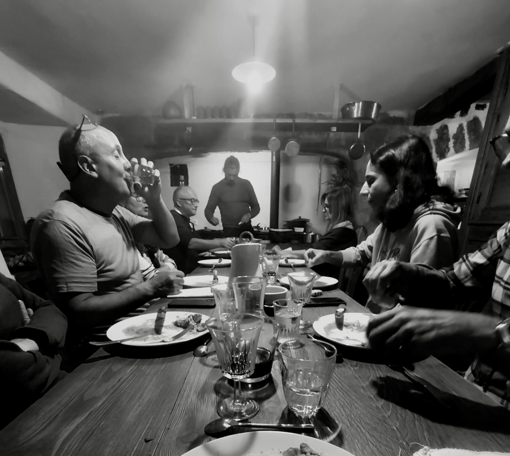
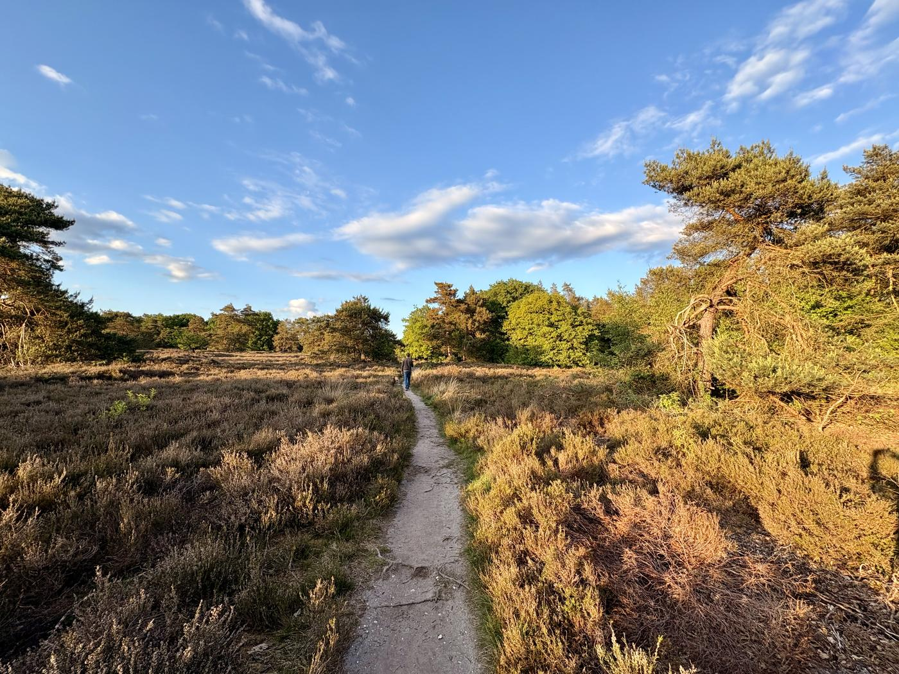
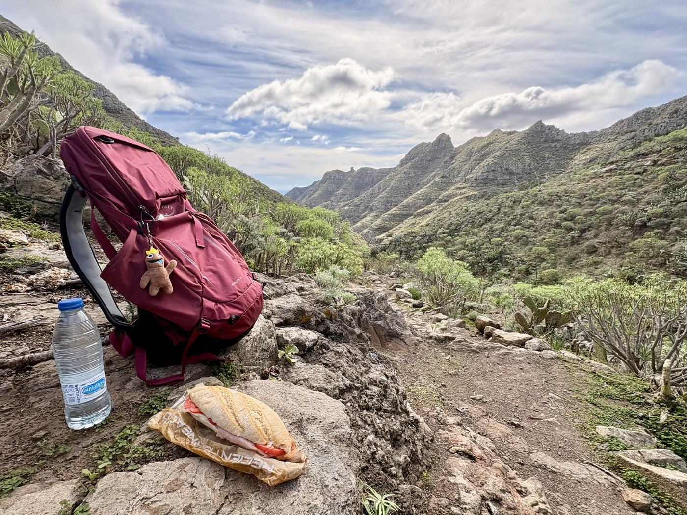
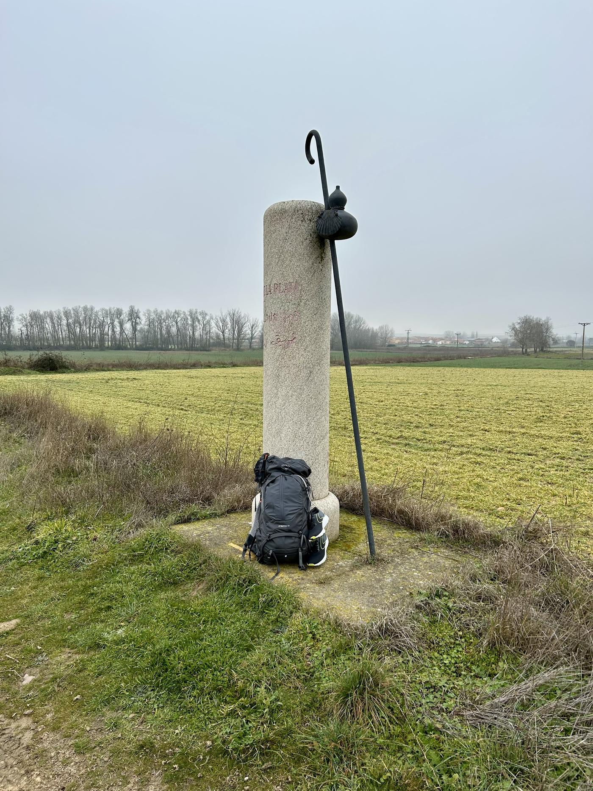
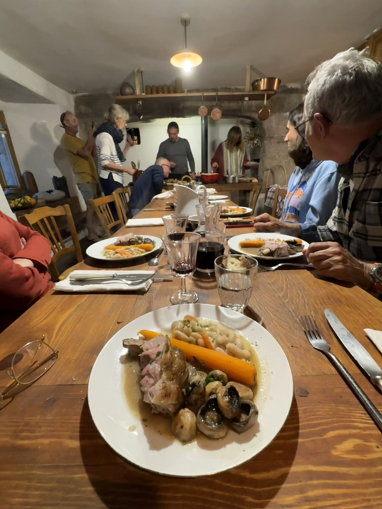
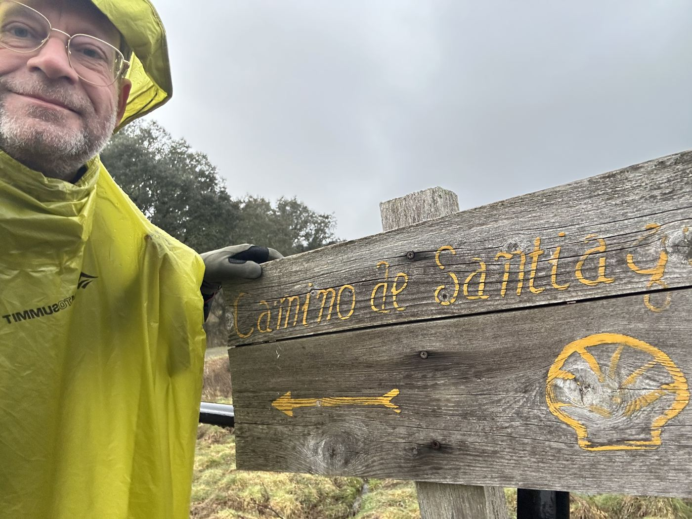
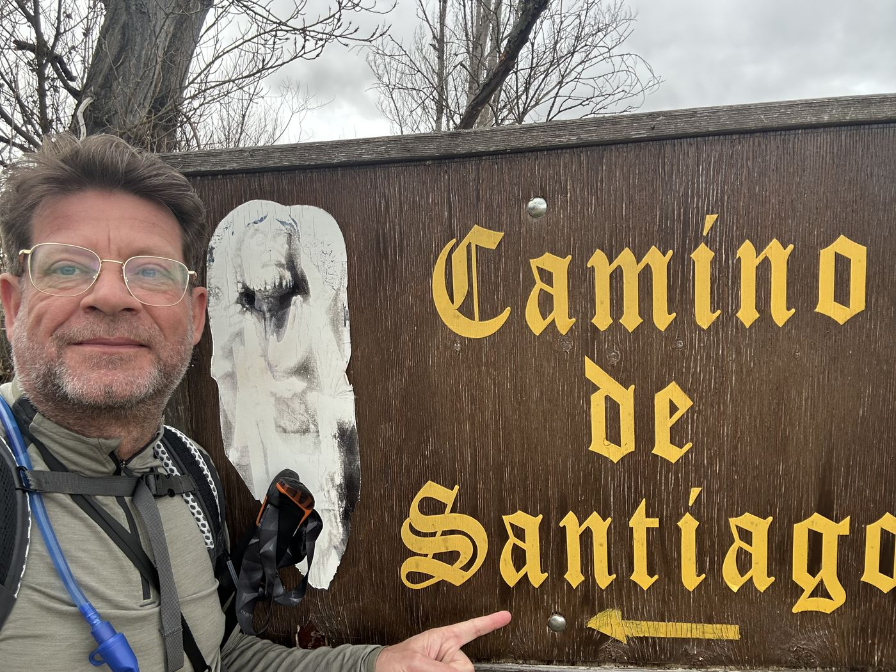

Denk je eraan de Camino te lopen, maar ben je er nog onzeker over? Of sta je te trappelen voor het avontuur van je leven? Ik loop de eerste kilometers met je mee.
Ontdek de trainingenDe Camino is meer dan een lange wandeling. Het is dagenlang op je eigen benen vertrouwen, je ritme vinden, en omgaan met alles wat de weg op je pad legt — verwacht én onverwacht.
Vertrek je goed voorbereid, dan haal je meer uit elke dag onderweg. Niet omdat het minder zwaar wordt — maar omdat jij sterker aan de start staat. En dat voel je, elke kilometer.


Twijfel je nog of de Camino iets voor jou is? Loop één dag mee — zelfde rugzak, zelfde ritme, zelfde gesprekken als op de echte Camino. Na vijftien kilometer wéét je het.
Na afloop ontvang je een persoonlijke paklijst voor je gear, advies over welke Camino bij jou past, en een trainingsschema tot aan je vertrek.

Klaar voor de volgende stap? Twee dagen lopen in de Ardennen of Limburg, één nacht albergue-stijl, en ontdekken wat je lichaam op de tweede ochtend tegen je zegt. Hier begint de Camino in je hoofd.
Inclusief overnachting en alle maaltijden. Je hoeft alleen jezelf en je rugzak mee te nemen.

Het avontuur zelf. Ik loop de eerste drie dagen van jouw Camino met je mee — de zwaarste, de spannendste, de mooiste. Daarna loop jij alleen verder. En dat kún je dan ook.
Inclusief begeleiding en overnachtingen tijdens de eerste drie dagen. Vluchten boek je zelf — ik denk mee over de beste verbinding.

Eens een compañero, altijd een compañero. Wie met ons traint, blijft welkom in een besloten kring van mede-pelgrims — voor vragen onderweg, verhalen bij thuiskomst, en het volgende avontuur dat altijd wel weer lonkt.

De meeste websites laten alleen de zon zien. De gouden velden, het glas wijn aan het eind van de dag, de eindeloze blauwe lucht boven Castilië. Dat klopt allemaal. Maar er is meer.
Soms regent het drie dagen achter elkaar. Soms zit je rugzak vol nat en weet je niet meer waarom je dit doet. Soms is je voet rauw, de albergue vol, en de volgende dorp nog acht kilometer ver.
En juist op die dagen is het fijn om iemand naast je te hebben die het zelf ook heeft meegemaakt. Iemand die zegt: dit hoort erbij, het wordt vanavond weer droog, en morgen is het weer een nieuwe dag.
Hoe je rugzak voelt op dag drie. Wat je voeten doen na 25 km. Hoe je traagheid leert. Dit leer je niet uit een boek — dit oefen je samen.
Wat doet de stilte met je? Hoe ga je om met regen, met heimwee, met de vraag waarom je dit eigenlijk doet? De mentale Camino begint vaak vóór de fysieke.
Welke route, welke albergues, welk seizoen, welk tempo. Van iemand die de weg gelopen heeft, niet van een algoritme. Geen reisbureau-praat, maar échte ervaring.
"Ergens onderweg verandert er iets. Dan loop je niet meer naar Santiago — dan loop je gewoon."

Ik liep mijn eerste Camino een paar jaar geleden, denkend dat ik wist wat hij zou zijn. Bij thuiskomst wist ik vooral wat ik niet had geweten. Daarna nog vele malen — Francés, Vía de la Plata — telkens weer iets nieuws.
Camino Compañero is voor mij geen reisorganisatie. Het is mijn manier om door te geven wat ik onderweg heb geleerd: niet uit een gids, maar uit eigen voeten, schouders, en stiltes. En af en toe een blaar.
Ik begeleid kleine groepen — nooit meer dan vijf — omdat de Camino een persoonlijke weg is, ook als je hem samen loopt.
Eendaagse trainingen op de Utrechtse Heuvelrug. Kies je dag: elke maandag, woensdag en vrijdag. Edities in de zomer- én wintermaanden — want ook kou en regen horen bij een eerlijke voorbereiding.
Twee dagen in Valkenburg of de Belgische Ardennen, albergue-stijl. Om het weekend in de zomermaanden, wanneer de dagen lang genoeg zijn voor veertig kilometer in twee etappes.
De eerste drie dagen vanaf Sevilla — om het weekend, vertrek op zaterdag. Andalusië in het voorjaar: bloeiende velden, milde temperaturen en directe vluchten vanuit Nederland.
De klassieke start: vanuit Saint-Jean-Pied-de-Port over de Pyreneeën, om het weekend. Het najaar op z'n mooist — gouden licht, rust op de route, en de bergen nog open.
Gear & Go-dagen gaan door vanaf 2 deelnemers; weekend-trainingen en Camino-begeleidingen vanaf 3. Maximaal 5 deelnemers per training. Trainingsweekenden en Camino-weekenden vinden nooit in dezelfde maand plaats.
Beschikbaarheid laden…
Een training gaat definitief door zodra het minimum aantal deelnemers is bereikt — je krijgt daarvan altijd persoonlijk bericht.
Geen verplichtingen, geen grote stappen. Eén dag, een rugzak, en de eerste kilometers samen. Het avontuur van je leven begint dichterbij dan je denkt.
Plan een dag-training